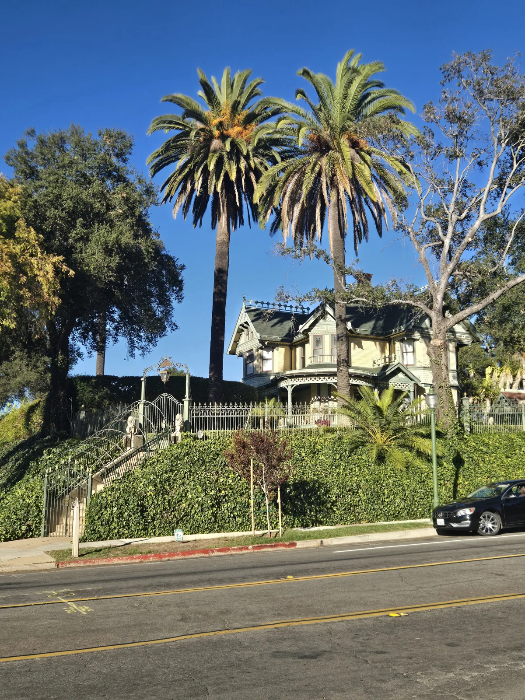
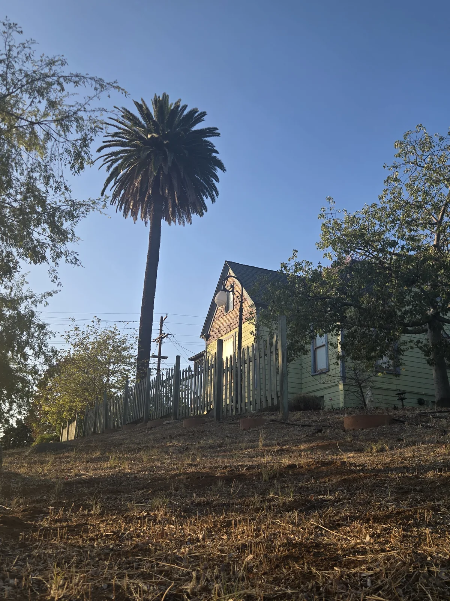
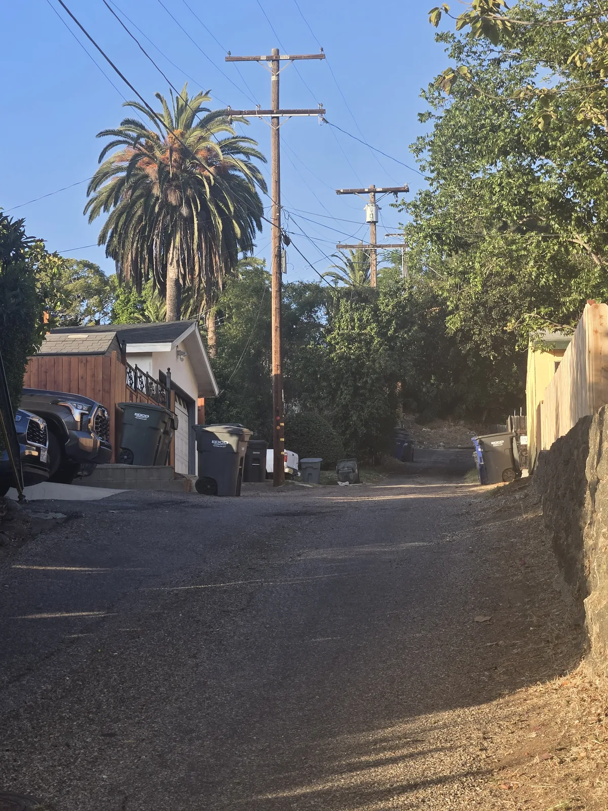

On July 2 and July 16, 2026, I walked parts of Old Escondido and photographed mature palms with the homes and streets around them. I was not making a tree inventory or judging the condition of each palm. I wanted a dated record of something that is easy to miss: these palms are part of how the neighborhood looks and feels.

The strongest photographs were the ones that showed those relationships. A tall crown behind an early house gives the building scale. Repeated palms carry your eye down a block. A full canopy above a roofline helps an established property read as established.

That is what I mean when I call these palms living landmarks. Their value is not limited to the plant itself. Their height, age, placement, and relationship to nearby buildings help define a property and, across several properties, a neighborhood.


When a mature palm disappears, the change is larger than an empty planting space. The skyline, shade, scale, and familiar view can all change at once. That does not mean every mature palm can or should be retained. It means the landscape relationship is worth recording before a decision, decline, storm, or removal changes it.
For a useful baseline, I take at least one full-palm photograph, one wider view that includes the property or street, and the date. Repeat the same angles later. A photograph can show visible change, but it cannot by itself diagnose the cause of that change.
This is a limited SDPP field record, not a complete inventory, ownership record, condition assessment, or City-endorsed study. The properties shown are not represented as SDPP clients. For more on making repeatable records, see why Old Escondido’s mature palms deserve a baseline and palm records, monitoring, and verification.